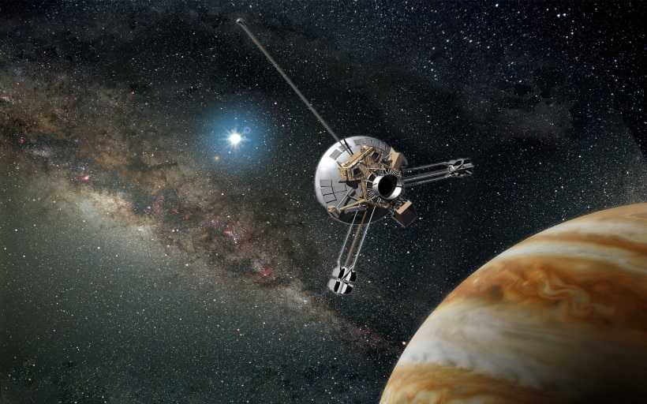

3 марта 1972 года состоялся запуск первого космического корабля Пионер-10, вышедшего за пределы Солнечной системы. Пионер-10 - американский космический зонд весом 258 килограммов, запущенный в 1972 году, который завершил первую миссию на планету Юпитер. После этого Пионер-10 стал первым из пяти искусственных объектов, достигших такой скорости, которая позволила вылететь за пределы Солнечной Системы. Оператором миссии являлся исследовательский центр Эймса в Калифорнии., а сам космический зонд был изготовлен TRW Inc.
